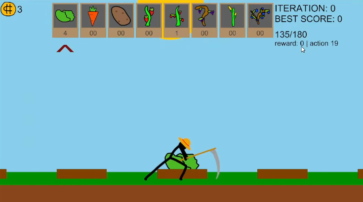
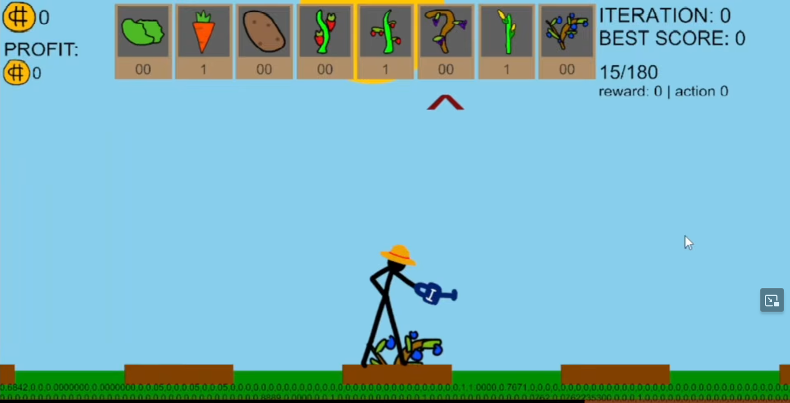
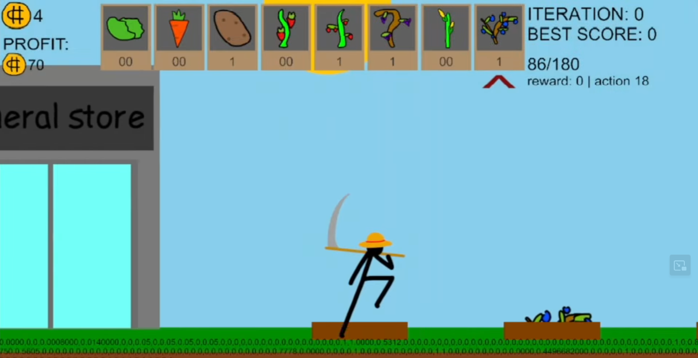
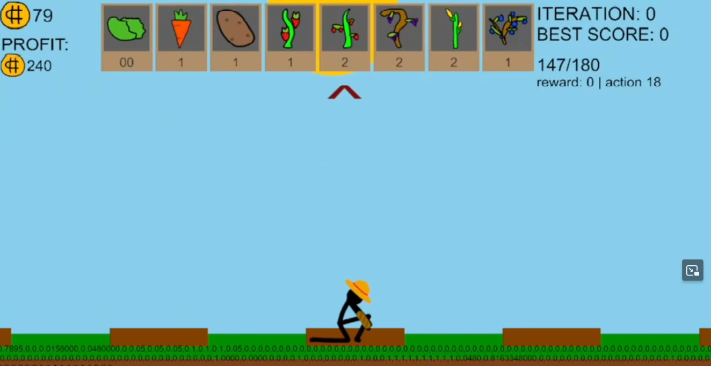

PPO model learns how to manage time and farm, water, plant, reap, buy seeds, etc. to earn the most money possible from farming in a 3 minute day.
DemonstrationResources
Discord Model Based on PaperInformation
In this game, the AI controls the stickfigure. He can: plant, water, reap, and buy (seeds or upgrades).
The PPO model has to learn how to manage its time correctly, because each action takes a lot of time. Moving takes the most, so it needs to savor what it does.
Overall, this project taught me the importance of binary flags and giving the AI more info so it doesn't need to waste training w+b on formulas I can give it.
Michael's Description
oh man did this project take longer than i thought it would...
alright so basically i made this project within 3-4 days cause i was leaving the next week, so i wanted to train it (remote desktop allowed me to monitor and check)
it never trained correctly over that week so i stopped it within the first day (it converged poorly). when i got back it took another week of tweaking a lot of stuff
and then it finally worked! the main takeaway i got was: bianry flags, more inputs, more exploration lol; fun project nonetheless
Visuals
AI in shop
Failed model #1, harvesting a cabbage
Watering a blueberry
Walking/leaving store
Planting tomato plant